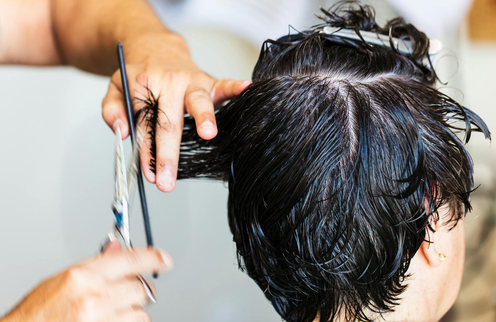

A hajunk az egyik legfontosabb önkifejező eszközünk. Egy jól megválasztott hajszín, egy precíz vágás vagy egy modern stílus azonnal képes növelni az önbizalmunkat, és teljesen új megvilágításba helyezheti a megjelenésünket. Azonban mindannyian tudjuk, hogy a tökéletes frizura mögött szinte mindig egy zseniális szakember áll.
De hogyan találhatjuk meg a számunkra legmegfelelőbbet a főváros hatalmas választékában? Ebben a cikkben bemutatjuk, milyen szempontokat érdemes figyelembe venni, ha a célunk nem kevesebb, mint a legjobb szakember megtalálása.
Sokan hajlamosak vagyunk az utolsó pillanatra hagyni a bejelentkezést, és betérni az első szembejövő szalonba. Bár ez néha jól is elsülhet, a hajunk egészsége és szépsége túl értékes ahhoz, hogy kockáztassunk.
A professzionális hajápolás nem csupán a haj levágásáról vagy befestéséről szól. Egy jó szakember: * Ismeri a haj szerkezetét: Pontosan tudja, milyen kezelésre van szüksége a száraz, töredezett vagy éppen zsírosodásra hajlamos fejbőrnek. * Személyre szabottan tervez: Figyelembe veszi az arcformádat, a bőrtónusodat és a mindennapi rutinodat is, mielőtt ollót ragadna. * Minőségi alapanyagokkal dolgozik: Nem roncsolja a hajadat olcsó, lakossági termékekkel.
Budapest a lehetőségek városa, ez pedig a szépségiparra is igaz. Szalonok ezrei várják a vendégeket, de a bőség zavara gyakran megnehezíti a döntést. A következő lépések segítenek szűkíteni a kört.
Mielőtt keresgélni kezdenél, tisztázd magadban, mit szeretnél. Egy egyszerű frissítő vágásra vágysz, vagy egy komplex, modern festési technikát (például balayage vagy copacabana) szeretnél kipróbálni? Nem minden fodrász specializálódott ugyanarra a területre.
A közösségi média korában egyetlen jó szakember sem létezhet online portfólió nélkül. Keress olyan szalonokat, amelyek rendszeresen frissítik Instagram- vagy Facebook-oldalukat valós, „előtte-utána” fotókkal. Ez a legbiztosabb módja annak, hogy felmérd a munkájuk minőségét.
Ha szeretnéd elkerülni a csalódásokat, és biztosra akarsz menni, érdemes olyan helyet választanod, ahol a szakértelem és a vendégszeretet találkozik. Szerencsére egy kiváló fodrász Budapest szívében képes arra, hogy ne csak formát, de új magabiztosságot is adjon neked, megvalósítva álmaid frizuráját.
Ha már van néhány kiszemelted, a következő jelek segíthetnek eldönteni, hogy valóban jó helyen jársz-e:
Ha sikerült kiválasztanod a szalont és lefoglalnod az időpontot, íme néhány tipp, hogy a találkozásból a lehető legtöbbet hozd ki:
A ragyogó, egészséges frizura nem a véletlen műve, hanem a megfelelő szakértelem és a gondos ápolás eredménye. Ne érd be a középszerűvel! Szánj időt a kutatásra, tájékozódj a vélemények alapján, és válaszd azt a szakembert, aki valóban odafigyel rád és a hajad egyedi igényeire.